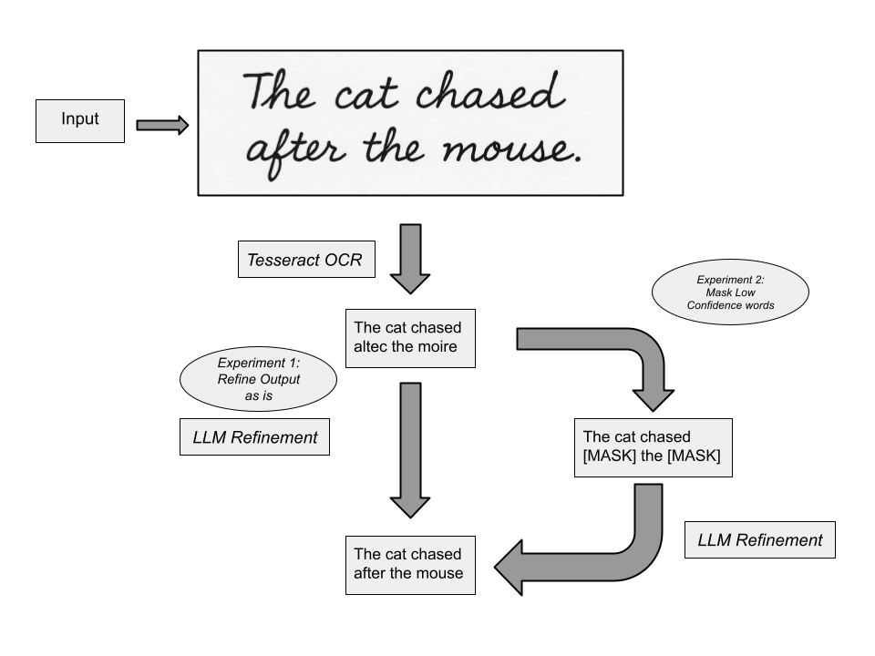

Abstract
Optical Character Recognition (OCR) has seen significant advancements, yet its performance remains far from perfect, especially pretaining to handwritten doccuments. Using LLMs to bolster OCR results via lingistic context could provide drastic improvements to such an output. Righting Writing aims to realize this potetntial through the open source OCR model Tesseract and fine-tune the output to closely match that of the original handwriting. The intermediate results are indicating a lot of incoherent responses as a result of Garbage In Garbage Out (GIGO). More extensive refining of the Large Language Model is likely to yield better results.
Teaser Figure
A figure that conveys the main idea behind the project or the main application being addressed. This figure is from StyLEx.

Any subsection
If you need to explain more about your figure
Introduction / Background / Motivation
What did you try to do? What problem did you try to solve? Articulate your objectives using absolutely no jargon.
Optical Character Recognition (OCR) is a powerful tool for computers to read physical documents but its capabilities are limited. Righting Writing takes the basic and frequently incoherent output from OCR and refine it through Large Language Models to more accurately represent the original text.
How is it done today, and what are the limits of current practice?
Computers today use OCR to splice text into individual characters and identify those characters to interprate text. OCR models frequently struggle with unique and messy handwriting or poor quality images.
Who cares? If you are successful, what difference will it make?
Having a model that can interprate human handwriting with a high degree of accuracy will eliminate the need of manual entry of handwritten text for digital tools and storage especially at scale.
Approach
What did you do exactly? How did you solve the problem? Why did you think it would be successful? Is anything new in your approach?
Our initial approach involves proving this pipeline works for a data rich language like English. The IAM Dataset provides various handwriting styles and text content. The input data was preprocessed by filtering out the portion of the typographically consistent output and put only the handwritten text as the input. The OCR model would then return two seperate outputs: the most confident output for all characters and the output with masks replacing low confidence words. These seperate models will then be used as inputs for t5 to fix the errors in the text and BERT to fill the masks respectively. The rational behind this approach is that LLM's have the context to repair misspelled words or best predict masked words. Our approach is rapidly evolving due to the quality of the OCR output having a lower overall confidence for handwritten text. As a result we are looking into other OCR models or other LLM prompting methods to improve the english baseline.
What problems did you anticipate? What problems did you encounter? Did the very first thing you tried work?
The largest problem we anticipated was the quality of output produced by the OCR model. If the majority of the output is incorect or incoherent how will the LLM learn the context of what it is fixing. Upon the initial testing however, this problem presented itself in a more unorthadox way. Since the majority of the OCR output was inacurate and nonsensical, using the OCR output for the LLM input yielded an even less sensical answer usually consisting of a repatition of a single short nonsensical token. This phenomina is known as Garbage in Garbage Out (GIGO) and was the primary hinderance of our initial findings.
Results
How did you measure success? What experiments were used? What were the results, both quantitative and qualitative? Did you succeed? Did you fail? Why?
Our initial experiments utilized Word Error Rate (WER) and Character Error Rate (CER) to measure success as these metrics are the standard metrics utilized for OCR experiments. The intial three experiments we tested were using an LLM (t5) to fix all the incoherency in the entirety of the OCR output, masking low confidence words and filling those masks using an LLM (BERT), and finally the basic OCR output as a control. From a human review these outputs are qualitatively a failure the baseline OCR has a much higher performance due to the general incoherency the LLM related outputs had. This is related to the aforementioned GIGO phenomina. Through refinement of both the initial OCR output and the usage of LLM we aim to further improve the results.
| Experiment | 1 | 2 | 3 |
|---|---|---|---|
| Sentence | Example 1 | Example 2 | Example 3 |
| Errors | error A, error B, error C | error C | error B |

Conclustion and Future Work
The OCR to LLM pipeline shows potential in increasing the accuracy of reading handwritten documents. The results of this study are easily reproducable due to the usage of soley open source models and datasets. While a technology like this can be useful, it's important to understand the risks of using it. This technology is currently limited by the ability to comprehend less legible or rarer handwriting. There is inherent risk involved in the event of encountering a highly sensitive or legal document. In this event there is a possibility that the pipeline misinterprates or misreads parts of the document. As both OCR and LLM practices improves this will become less and less of a risk, but as that technology is developing it is likely best for a human reviewer when model confidence is low. The next steps of this study would be to further expand the types of documentation the pipeline can handle. Diversity in chosen language, time period of the text, or the quality of the handwritten text provide additional complexity that present new challenges for this type of model. Overall, the OCR to LLM pipeline holds promise when it comes to reading handwritten text and offers a optimistic view into the comprehension of human text.